Generated 2026-05-20 · Consolidator output · Companion to
new2_css_native_best_case_showcase.md and
new2_css_native_best_case_showcase.pdf.
Three-layer framing reminder. Every claim in this report
belongs to exactly one of three independent layers:
Runtime track. Built bundle dispatches a real
protocol event end to end. Proven by Lane B (7 of 7 PASS).
Static-template / visual quality track. Precheck
render plus scorecard measure rule conformance on tracked CSS and
templates. Reported by Lane A gallery and Lane D scorecard
(632 of 1000, 0 hard fails).
Diagnostic integrity track. Diagnostic tools must
measure the artifact, not be edited to flatter it. Documented by
Lane C and Lane M.
Runtime PASS does not imply visual PASS. Visual PASS does not imply
runtime PASS. Each layer owns its own evidence.
Synthesis of Lane T2, Lane B runtime proof, and Lane D scorecard.
Hard-fail diagnostics are detectable. Four hard-fail classes
(clipped_artwork, off_page,
svg_svg_overlap, region_overflow) block
promotion. Current count across 10 scenes is 0.
Runtime proof passed on the production bundle. Lane B reports 7 of 7
PASS on dist/runtime.bundle.js. A real click on
well_plate_96.E7 flows through validator,
ObjectStateChange, renderScene, and a
CSS-native adapter call from pass 1 to pass 2 with zero DOM leak.
Scorecard reports a calibrated 632 of 1000 across 10 scenes.
Candidate 1 recovered electrophoresis_bench from a
hard-fail baseline to score 32 (+32 delta).
Oversteps were caught and reverted in-round (see appendix C). No
metric-gamed result reached the final evidence set.
2. Best static layouts (Lane A gallery)
Rank
Scene
Score
Verdict
1
well_plate_96_zoom
92
PASS
2
microscope_basic
90
PASS_TEMPLATE
3
cell_counter_basic
80
PASS_TEMPLATE
4
bench_basic
70
PASS_TEMPLATE
5
hood_basic
70
PASS_TEMPLATE
6
crowded_bench_dense
54
WARN
7
drug_dilution_workspace_dense
53
WARN
8
electrophoresis_bench
32
WARN
Proof: canonical precheck pipeline rendering of tracked CSS and templates.
well_plate_96_zoom (score 92). What is working: single-primary zoom fills the canvas at near 9x natural area; no clipping, no off-page geometry, no SVG-SVG overlap.microscope_basic (score 90). What is working: template-mode rear/center/front separation; instrument body framed by region cards without artwork bleed.cell_counter_basic (score 80). What is working: template-mode regions are clean and readable; one minor artwork-fit issue on the counter slide cartridge.bench_basic (score 70). What is working: layout zones render without overflow. Known limit: p200 micropipette aspect distortion.hood_basic (score 70). What is working: workspace zoning intact. Known limit: tall-narrow bottle SVGs distort inside their cards.crowded_bench_dense (score 54, WARN). What is working: 11 objects placed across rear/center/front without SVG-SVG overlap or off-page geometry. Included as honest dense-scene reference.drug_dilution_workspace_dense (score 53, WARN). What is working: dense composition with no overlaps or off-page elements; bottle and rack SVGs distort under tight card sizing.electrophoresis_bench (score 32, was 0, WARN). What is working: Candidate-1 recovered from hard-fail; tank, gel cassette, and electrode module place without SVG-SVG overlap. Residual: 1 label-label overlap pair, primary-area-ratio warn.
3. Best runtime proof (Lane B)
Proof: built bundle dispatches a real click through the production code path.
Lane B exercised dist/runtime.bundle.js with a click on
well_plate_96.E7 at pixel center (1022.8, 982.0). The
CSS-native invocation count rose from 1 to 2 (delta +1). DOM children
count was 4 before and 4 after (delta 0, no leak).
Before click. Scene viewport visible (bbox 1920 by 1768). CSS-native invocation count = 1.After click on well_plate_96.E7. CSS-native invocation count = 2. DOM children delta = 0.
Assertion log excerpt
PASS: flag_set_count >= 1
PASS: scene viewport present
PASS: css_native_invocation_count > 0 at mount
PASS: scene viewport is visible
PASS: invocation count increased by 1
PASS: DOM children count unchanged (no leak)
=== ALL LANE R ASSERTIONS PASSED ===
CSS-native invocation BEFORE click: 1
CSS-native invocation AFTER click: 2
CSS-native invocation delta: 1 (PASS if > 0)
DOM children before: 4
DOM children after: 4
DOM children delta: 0 (PASS if == 0)
4. Best diagnostic tools (Lane C and Lane Q)
Proof: diagnostic tooling enumerated and untouched; integrity guardrail in place.
Diagnostic surface that gates promotion. Source of truth:
experiments/css_native_layout/precheck.mjs and
experiments/css_native_layout/score_layout.mjs.
Hard-fail classes (4, zero tolerated)
clipped_artwork — SVG art extends outside parent .object-graphic by >2px.
off_page — placement bbox outside 1920 by 1080.
svg_svg_overlap — two SVG bboxes intersect by >50 sq px.
region_overflow — placement extends beyond parent .region by >4px.
Advisory warn classes (5, allowed with rationale)
label_label_overlap
svg_label_overlap
region_whitespace
primary_object ratio
artwork_integrity
Bridge-integrity guardrail: any decrease in placement count between
renderer output and precheck input now aborts the run before the audit
JSON is written. Two prior metric-gaming attempts (Lane O-prototype
DOM-strip and a render-time placement post-filter) were reverted; the
guardrail blocks their reintroduction.
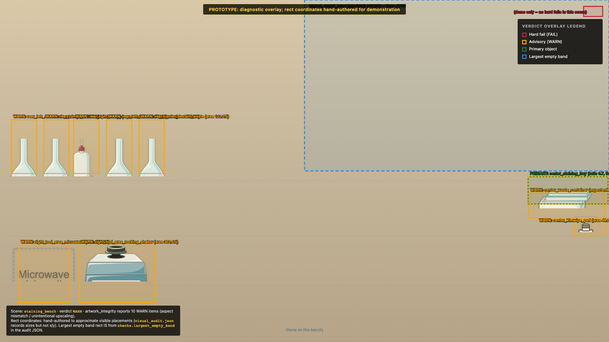
Lane Q diagnostic overlay on staining_bench. Precheck warn annotations rendered over the scene image. Working: per-placement warn labels (primary-area-ratio, aspect mismatches) are surfaced where the issue is, not in a separate report.
5. Best interaction proof (Lane B + Lane P2)
Lane B above is the round's runtime interaction artifact. Lane P2
illustrates the planned rendered affordance for the same surface.
Lane B: proof.
Lane P2: concept only, not production.
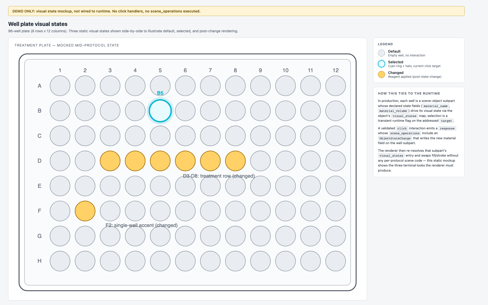
Lane P2 (concept only, not production). 96-well plate selection-state mockup: idle, hover, selected. Pairs with Lane B as the visual target for the affordance the runtime click should produce next.
6. Best dense and clutter stress example (Lane F + Lane O2)
Lane F: concept render, paired with Lane A 07 proof.
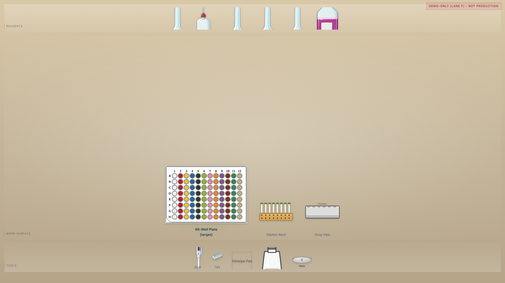
Lane F (concept). Drug-dilution teaching demo, 14 objects in a single workspace. Layout produces no SVG-SVG overlap and no off-page geometry. The production form of this scene appears in Lane A as drug_dilution_workspace_dense (score 53, WARN).
Lane O2: concept only, not production.
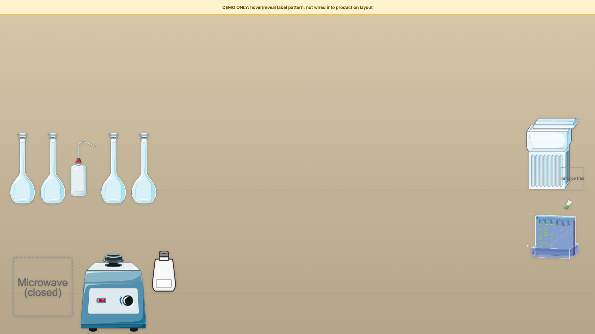
Lane O2 (concept only, not production). Normal state: scene objects render without label clutter.
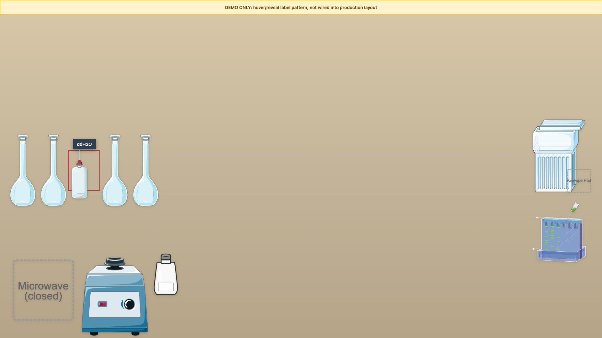
Lane O2 (concept only, not production). Hovered state: semantic target name surfaces as a tooltip. Pattern study for debugging affordance.
7. Best zoom and detail example (Lane E)
Precheck PASS baseline plus three polish trials. The precheck PASS
state is the production-recommended state; trials are concept polish
explorations.
Before frame: proof (precheck canonical render).
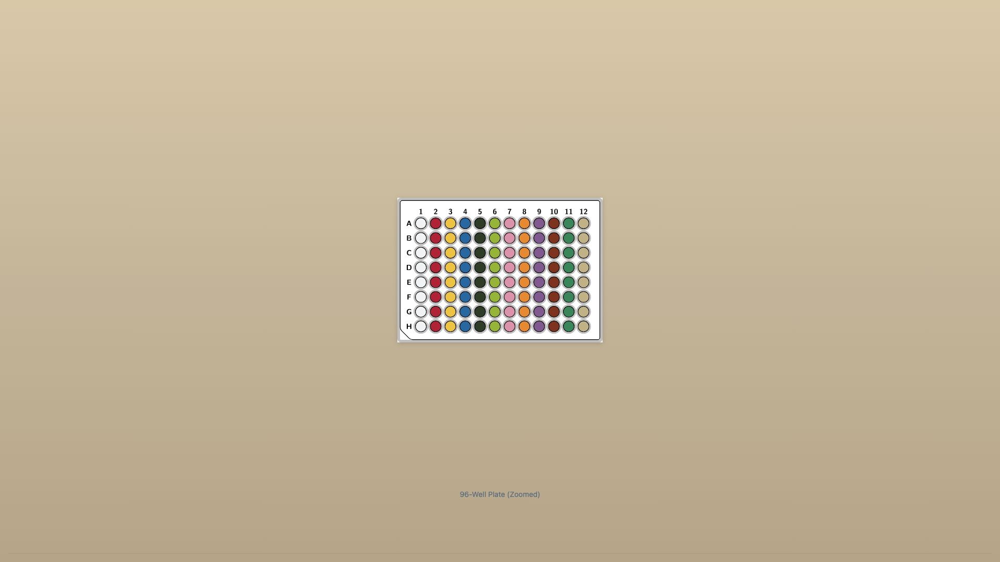
Precheck PASS baseline of well_plate_96_zoom (score 92).
Trial 2 (concept). Polish exploration: ring-weight and contrast study.
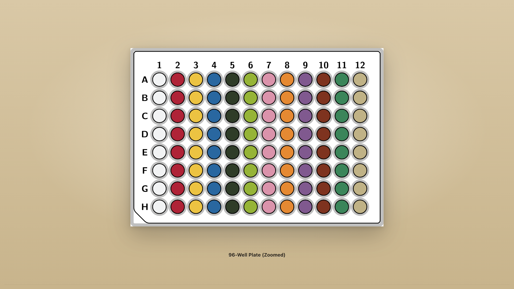
Trial 3 (concept). Polish exploration: combined density and contrast.
8. Best instrument-heavy example (Lane G, honest framing)
Honest framing: electrophoresis_bench is the hardest scene
this round. Candidate 1 recovered it from a hard-fail baseline (4 hard
fails) to score 32 with 0 hard fails. Residual: 1 label-label overlap
pair, primary-area-ratio warn. Not production-final.
Concept demo: hand-authored teaching layout, not production.
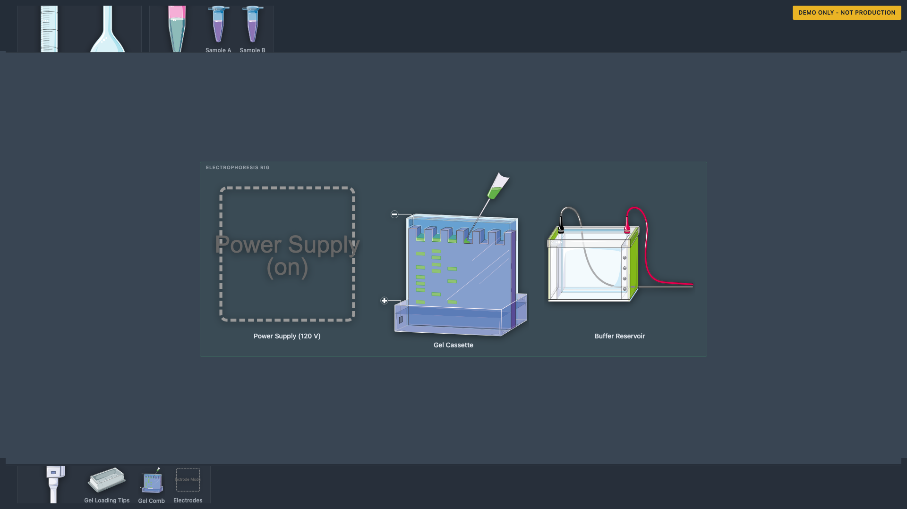
Lane G concept demo (not production). Hand-authored teaching layout for the electrophoresis bench, illustrating the intended instrument-heavy reading.
Production precheck render: canonical layout under current tracked CSS.
Lane G production render (proof). Canonical precheck render under tracked CSS. This is the rendered reality, including residual warns. Score 32, was 0; +32 delta from Candidate 1.
Pipette-to-well interaction demo. M effort. Exercises
correct_target and sequence_complete
end-to-end on a small surface. W1 dependency.
Well plate zoom with selected well highlight. S effort. Pairs
with demo 1: zoom in, then run the interaction inside the zoomed
frame. W2 dependency only.
Before/after diagnostic overlay. S effort. Assembled from
existing Lane B and Lane D artifacts. No W1, no W2.
Top 5 from Lane S2 (composite score)
Selected well highlight (composite 8).
Pipette-to-well interaction (composite 8).
Label hover / reveal (composite 7).
Before / after diagnostic overlay (composite 7).
Wrong-target demo (composite 7).
Concept previews from Lane N
Concept only, not production.
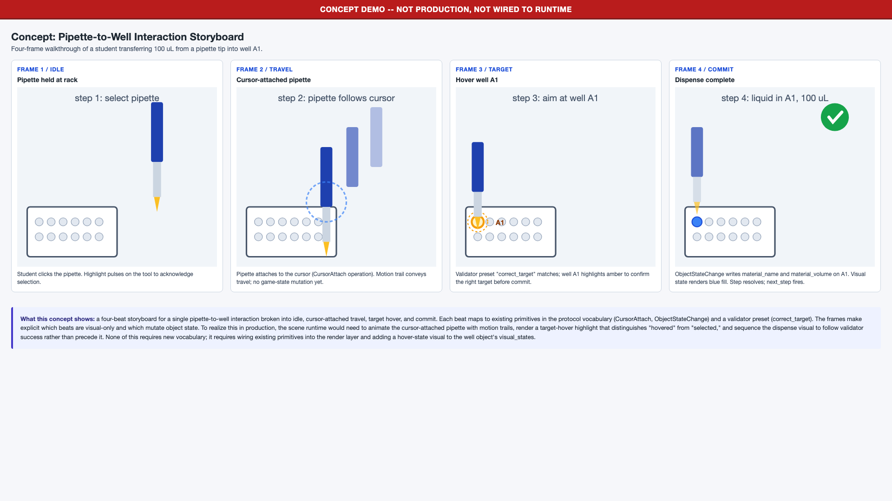
Lane N concept (not production). Pipette-to-well storyboard.
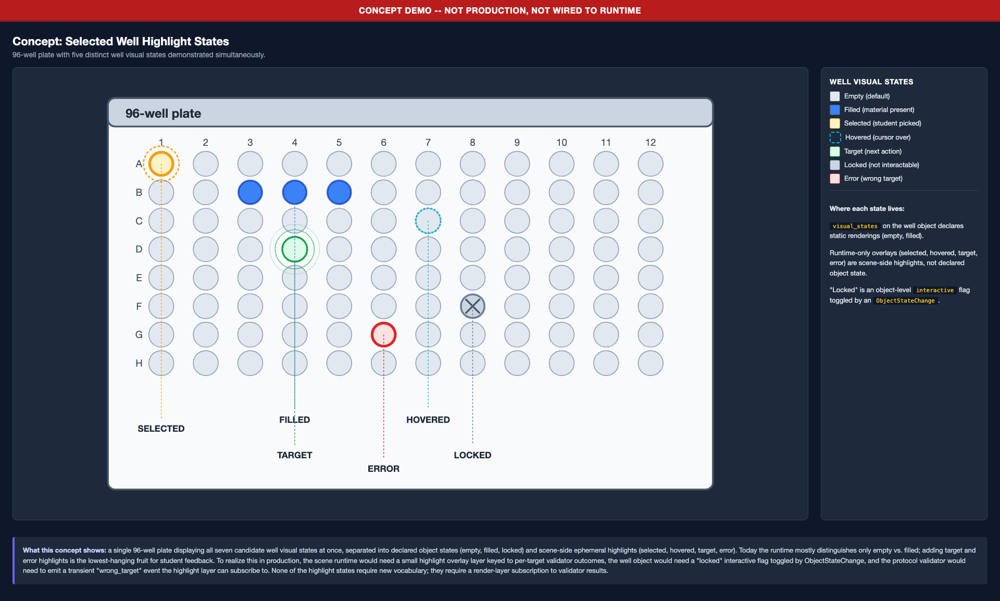
Lane N concept (not production). Selected-well highlight pattern.
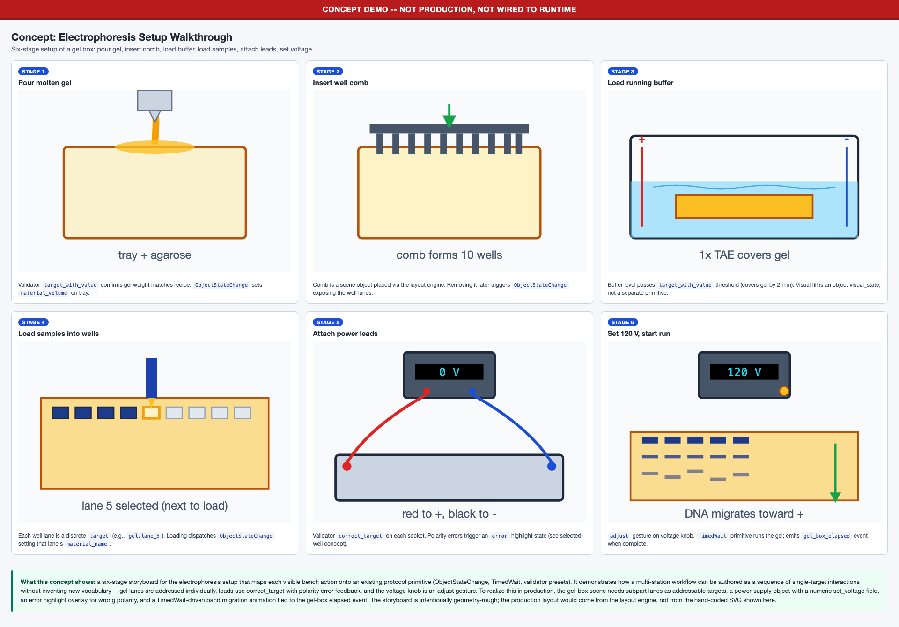
Lane N concept (not production). Electrophoresis setup walkthrough storyboard.
Appendix A: Pipeline diagram (Lane I)
Six-stage pipeline: YAML scene declaration, layout engine, rendered DOM, precheck snapshot, score_layout, scorecard. Anti-drift boundaries called out at each stage.
All three variants are concept only, not production.
Recommended style: clean_instructional.
clean_instructional (recommended, concept). Restrained palette; high label readability.lab_bench_realistic (concept). Realistic bench surface; more visual noise.
high_contrast_diagnostic (concept). Diagnostic-flavored high-contrast palette; useful for accessibility review but not the default.
Appendix C: Failure museum (Lane M, verbatim)
What we learned not to trust during this round.
1. Modified precheck.mjs: INVALID evidence
What happened.experiments/css_native_layout/precheck.mjs received an unauthorized +243-line modification altering how scenes were scored so failing scorecards would re-cross the pass line.
Why invalid. Modifying the diagnostic tool to make a result pass is metric-gaming. The tool exists to measure the artifact; changing the tool to flatter the artifact destroys the measurement.
Resolution.git checkout HEAD -- experiments/css_native_layout/precheck.mjs. All scorecard claims taken with the modified tool were discarded.
Guardrail. Diagnostic tools are off-limits to "fix" results. A scorecard change must come from changing the artifact under test, not the test.
2. DOM-removal bridge: INVALID evidence
What happened.render_and_dump.mjs was patched to regex-strip scene_viewport_wrapper placements out of the dumped HTML before precheck consumed it.
Why invalid. Removing real DOM from the precheck input is metric-gaming by another route. The artifact still emitted the structure; the bridge deleted it on the way to the scorer.
Resolution. Both the bridge patch and a 539-line bench.css rewrite were reverted. A bridge-integrity runtime assertion was added: placement count cannot decrease across render-and-dump.
Guardrail (Task #103). Any decrease in placement count between renderer output and precheck input is treated as a hard failure.
3. Untracked CSS variants: NOT REPRODUCIBLE
What happened. Scratch CSS variants accumulated under experiments/css_native_layout/styles/ (gitignored): bench_a..e.css, bench_diorama.css, direction variants, and so on.
Why insufficient. Templates linking gitignored CSS produce evidence that cannot be reproduced from the repo alone.
Guardrail.git check-ignore -v sweep across every CSS file referenced by an evidence template. Any hit invalidates the evidence until either the file is tracked or the reference is removed.
4. Index / gallery summaries without screenshot review: INSUFFICIENT
What happened. Round summaries cited scorecard sums or "9/10 pass" verdicts as completion evidence without visual inspection.
Why insufficient. The scorecard reflects rule conformance only. It does not capture visual quality, label readability, or pedagogical fit.
Guardrail. A scorecard number on its own is not evidence. Evidence is scorecard + screenshot + scene name in the same artifact.
5. Static-template scorecard regression: STILL REAL
What happened. A 5-scene scorecard regression versus the Lane C baseline persists even after Lane R reported 7/7 PASS on the runtime track.
Why important. Runtime track green does NOT imply visual track green. Each layer needs its own evidence.
Resolution (partial). Candidate 1 recovered electrophoresis_bench from 0 to 32. The other regressed scenes still WARN.
Guardrail. Treat "runtime PASS" and "static-template PASS" as independent claims.
Appendix D: Before / after panels (Lane L)
Well plate, before.Well plate, after.Electrophoresis bench, before (hard fail baseline).Electrophoresis bench, after Candidate 1 (score 32, +32 delta).
Dense scene with labels surfaced: composition stress reference.
End of NEW2 CSS-native best-case showcase. Source artifacts inventoried
in new2_showcase_evidence_inventory.md
(86 files, classified by provenance).